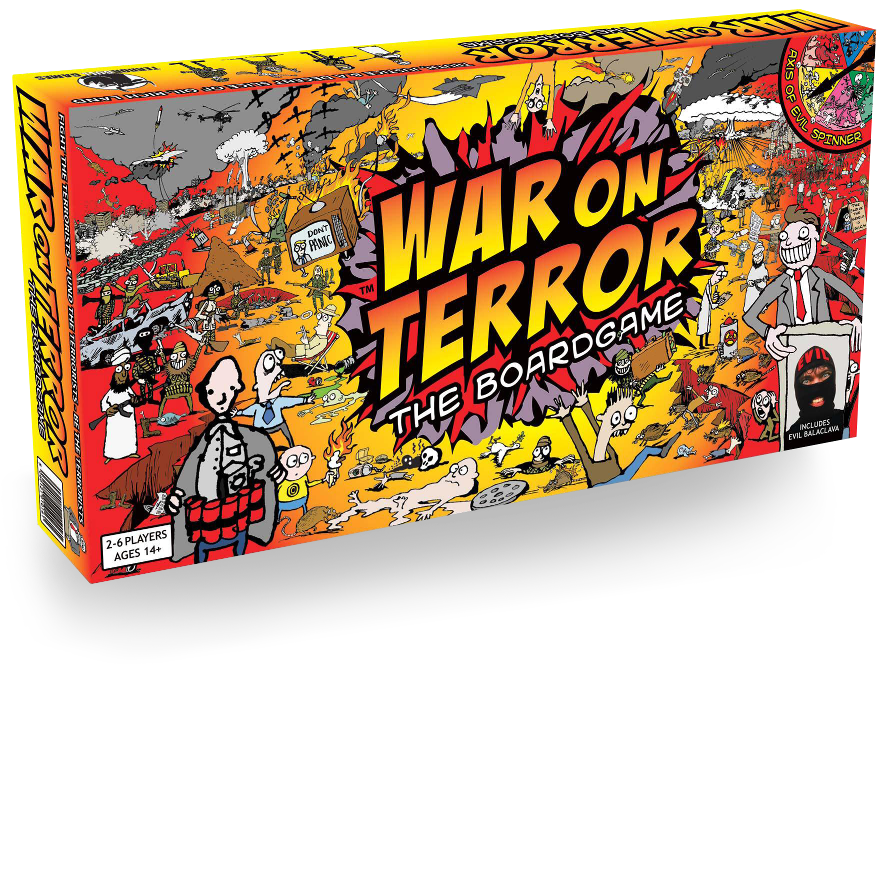
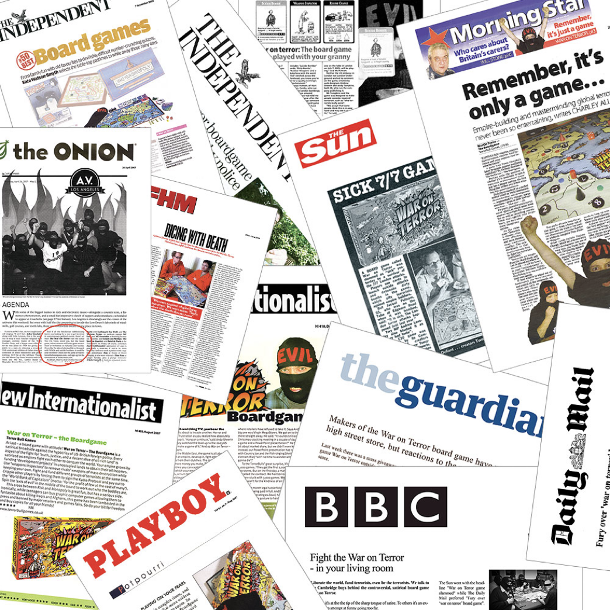
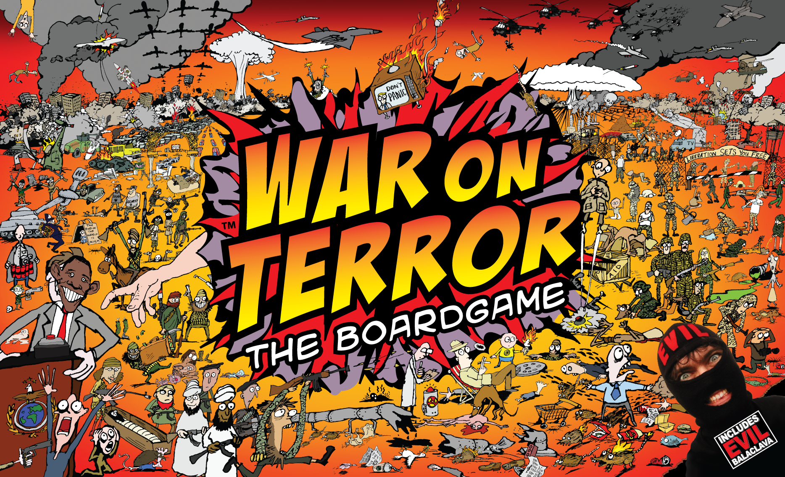
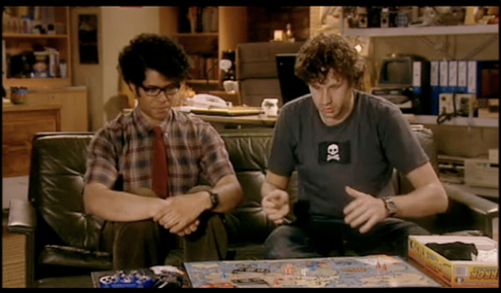
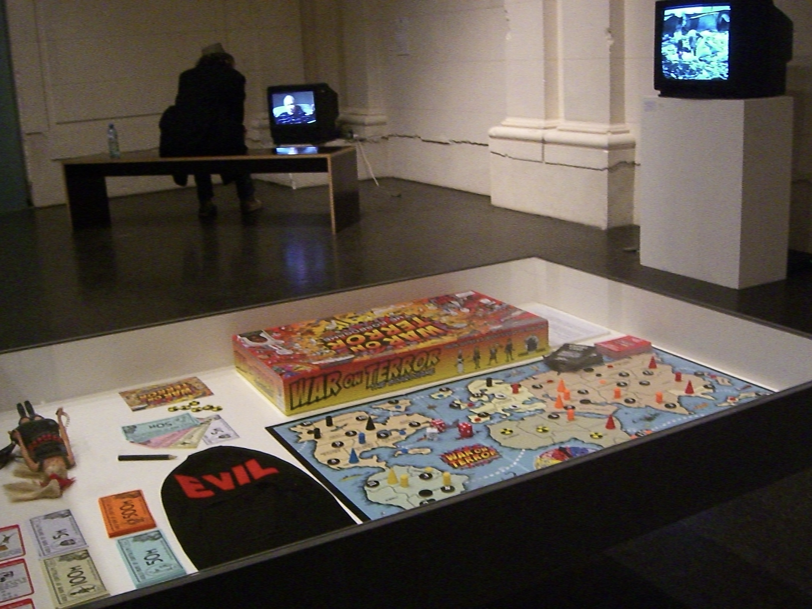
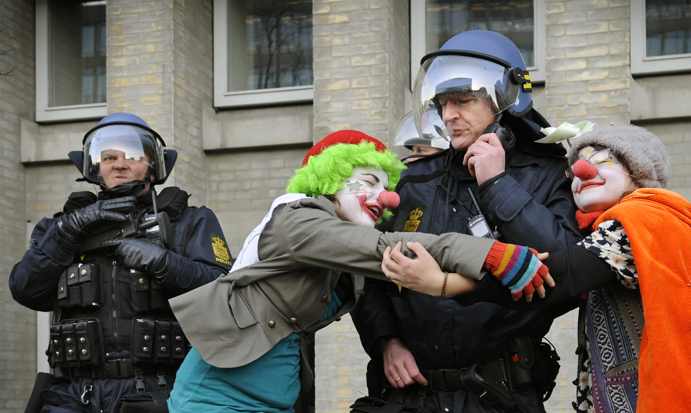
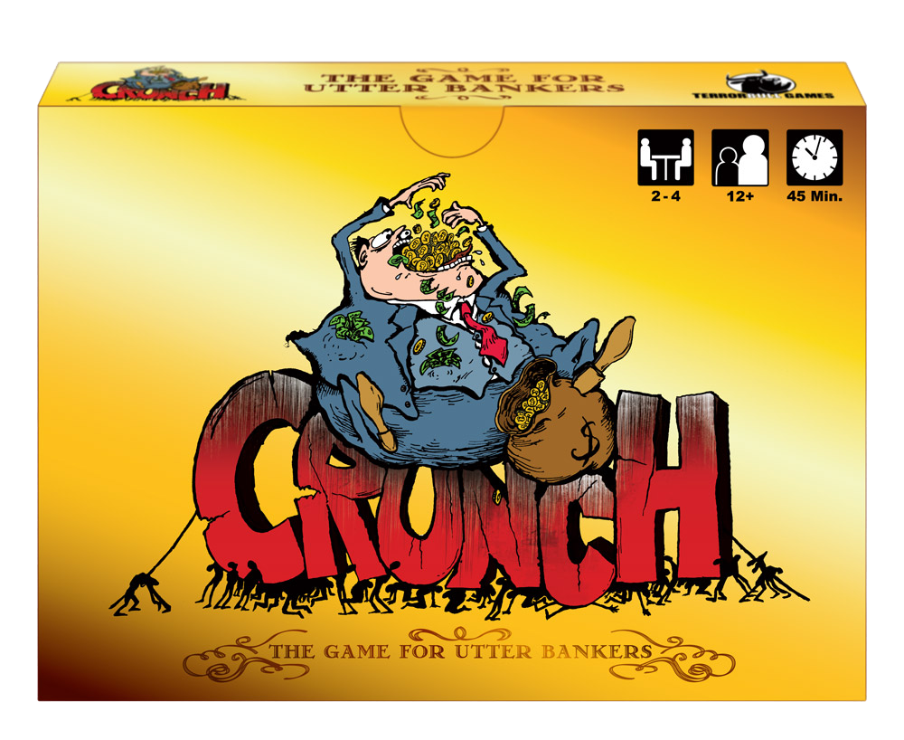

Origins
Radical play & product design
Back in 2005, I co-founded a radical board game company to publish games that challenged, provoked, entertained and occasionally got seized by police. TerrorBull Games taught me how to communicate complex ideas through systems and how the most effective way to challenge assumptions is to make people experience them.
Disruption through play
We founded TerrorBull Games to publish a nascent experiment in playful satire, War on Terror: The Boardgame - because no one else would. In doing so, I learned so much more than how to run and grow a niche publishing business.

It became transparent that the reaction to War on Terror was in large part due to the shape of the object, not necessarily its contents. People found the juxtaposition between play and serious politics jarring. We found it ideal.
While politicians decried it, we received letters from serving soldiers and survivors of terrorist attacks telling us how playing the game had helped change their minds about the war on terror, or given them the space to talk about their own experiences in a new framing.
We received letters from serving soldiers telling us how playing the game changed their minds about the war
Amazed by this, I spent years seeking a deeper understanding of play. I studied both the neuroscience and psychology of play, learning how play and games create a literal, demarcated safe space we sometimes call a 'pitch' or a 'board' (play theorists call this a 'magic circle') within which ideas can be safely explored and tested. I still use this function of play in my everyday work as a designer and design leader.
War on Terror: The Boardgame
In 2006, after two years of paper prototyping, TerrorBull Games released War on Terror: The Boardgame. It was deliberately challenging: kitsch, colourful, brash, as deliberately simplistic as the war itself was sold. And of course, a balaclava included in every box. The aesthetic was a provocation: why pretend you're preserving subtlety when the architects of the war have already destroyed nuance?
The game became a cultural phenomenon: International press coverage. Commercial censorship. Police seizures (because of the balaclava). Debates in parliament about whether satire crosses into incitement. Museum and gallery exhibitions. An appearance on The IT Crowd. Academic studies. For two years, a board game about terrorism was front-page news.



Play as a way of knowing
Board games are systems made tangible. Every rule is a hypothesis about human behaviour. Every mechanic is an argument. When you play War on Terror, you're not reading about asymmetric conflict - you're experiencing the frustration of impossible choices, the temptation of disproportionate response, the gap between stated values and emergent behaviour.
This is the same thing I do in product design, just with different materials. A workshop game, a feed architecture, an executive pitch - each is a system designed to produce a specific kind of understanding in the people who interact with it.
Play disarms authority, including epistemological authority. It creates a space where people can explore dangerous ideas without dangerous consequences.

Why it matters
A broader practice of persuasive communication
War on Terror was not a one-off. TerrorBull Games produced a card game about the financial crisis where cheating is explicitly allowed, a party game about religious doctrine, memory games about forgetfulness as well as numerous experiments crossing into art, exploring what games could say that other media couldn't.

As TerrorBull grew, organisations like Amnesty, Greenpeace, SOAS and CAFOD increasingly approached us not simply to make games, but to use play as a tool for education, advocacy and organisational change.
Doing all this resulted in me becoming a bit of a niche expert in play, persuasion and behavioural change. So alongside the games there was also:
- Public speaking - Nudgestock talks on the persuasive power of play
- Teaching - guest lectures at Goldsmiths, including a choose-your-own-adventure format
- Exhibition - Now Play This festival artist presentations
- Writing - artist texts and talk notes on play, persuasion, and systems
What it proves
The through-line
Looking back, almost everything I've worked on has been a variation on the same question posed by TerrorBull:
"How to help people understand something deeply enough that they change what they do?"
At Antare, the complexity was AI-generated incident feeds. At Citrix, it was organisational wellbeing. At VMware, it was a commercial conversion journey. In workshops, it's whatever assumptions a team hasn't examined yet.
The materials change. The capability doesn't. I make systems that help people see clearly - whether those systems are board games, product architectures, research frameworks, or workshop activities.
Connection to today
My approach to product design was shaped before I entered the field. TerrorBull taught me that the most powerful communication happens when people experience an idea rather than being told about it - a principle that runs through every case study in this portfolio.